Busan Welfare Program
Intergration Service
by Team5
"WELLFARE"는 부산시의 복지관에서 운영하는
복지 프로그램에 대한 정보를 제공합니다.
사용자는 모든 복지 프로그램에 대하여 검색 및
비교가 가능하고 자신에게 필요한 프로그램을
선택하여 참여할 수 있습니다.
공영 주차장 정보, 키즈카페, 노인 사고 다발 구역 등
사용자에게 부가적인 정보를 제공하여 복지 프로그램의
참여에 있어 편리하도록 서비스를 설계하였습니다.
등록된 복지관
복지관명
프로그램 수
전화번호
탐색하기
현재 위치 등록: 현재 위치를 등록하여 거리 확인에 사용될 수 있습니다. 프로그램을 운영하는 복지관이 현재 위치로부터 얼마나 떨어져 있는지 확인할 수 있습니다.
프로그램 검색: 검색을 통하여 연결된 부산시의 복지관에서 운영중인 프로그램을 확인할 수 있습니다. 현재 50군데의 복지관과 연결되어져 있습니다.
복지관: 복지관별 운영중인 프로그램을 확인할 수 있습니다. 해당 복지관 근처의 주차장과 키즈카페의 정보를 확인할 수 있습니다.
필터링: 무료 강의, 관심 목록, 거리순, 가격순등 다양한 필터를 제공합니다. 수 많은 프로그램들 중에서 필터를 통하여 사용자의 프로그램 선택을 도와드립니다.
부가 서비스: 근처의 주차장, 키즈카페에 관한 정보를 얻을 수 있습니다. 복지관 주차장을 이용할 수 없거나 아이를 맡길 곳이 필요한 상황에 도움을 드립니다.
경로 탐색: 카카오맵을 통한 경로 탐색 서비스를 연결해드립니다. 경로를 탐색하여 경로와 이동 시간을 확인할 수 있습니다.
프로그램
2021년 기준으로 등록된 부산시의 복지관에서 1000개가 넘는 프로그램이 운영되었습니다.
이런 수 많은 프로그램들 사이에서 어떤 프로그램을 선택하는지에 대한 어려움을 느끼는 분들도 존재하실것입니다.
그런분들을 위한 "타겟 클라우드 차트"를 준비하였습니다.
타겟 클라우드 차트는 프로그램의 타겟층을 분석하여 이를 태그화하여 클라우드 차트로 나타낸것입니다.
개설되는 프로그램은 해당 프로그램을 이용하는 타겟층을 고려하고 개설됩니다. 이러한 타겟층은 프로그램의 수 만큼 다양하게 분포됩니다.
따라서 범주화시키기에는 너무 세부적이므로 클라우드 차트를 통해서 직관적으로 보실 수 있도록 하였습니다.
클라우드 차트에는 타겟 태그가 표시됩니다. 해당되는 타겟 태그를
선택하신 후 선택한 타겟을 대상으로 개설된 프로그램들을 확인하실 수 있습니다. 또한, 지도와 바로 연결되어 복지관의 위치와 여러
정보를 함께 확인하실 수 있습니다.